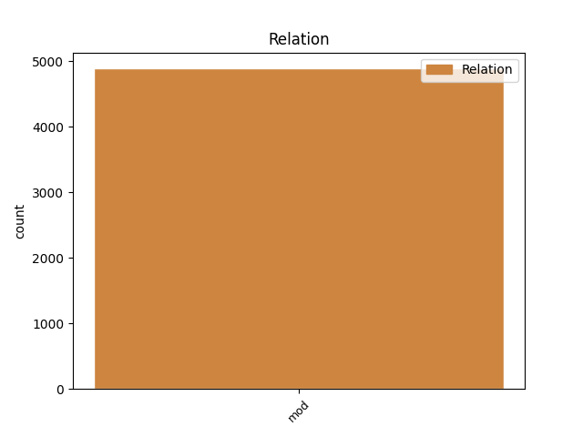
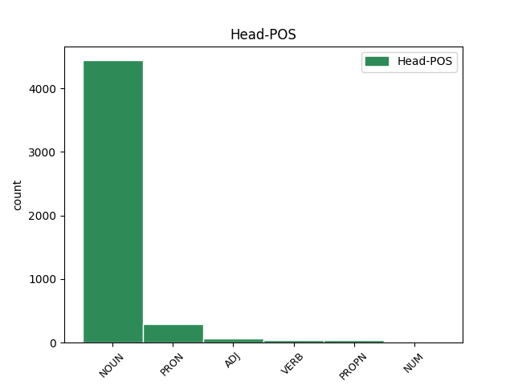
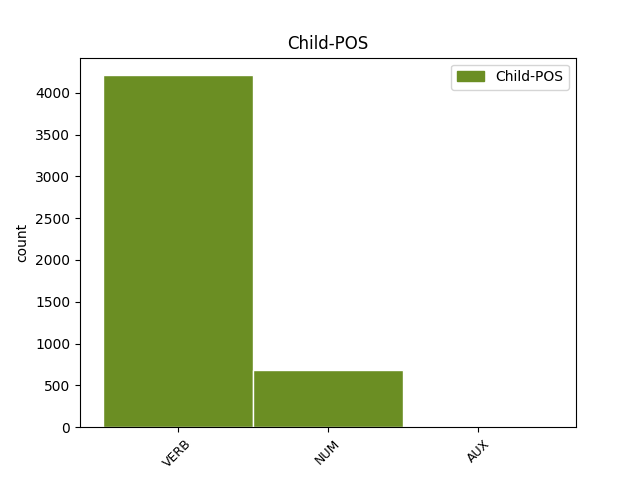

Distribution of features within this leaf



Agreement Rules sorted by frequency.
- When the dependent token is the modifer(mod) of the head token, and the dependent token is VERB.
1 unde _ _ _ _ 0 _ _ _
2 videmus _ _ _ _ 0 _ _ _
3 quod _ _ _ _ 0 _ _ _
4 forma _ _ _ _ 0 _ _ _
5 mixti misceo VERB K2|modM|tem4|grp1|casB|gen3|vgr1 Aspect=Perf|Case=Gen|Degree=Pos|Gender=Neut|Number=Sing|Tense=Past|VerbForm=Part|Voice=Pass 6 mod _ _
6 corporis corpus NOUN C1|grn1|casB|gen3 Case=Gen|Degree=Pos|Gender=Neut|Number=Sing 0 _ _ _
7 habet _ _ _ _ 0 _ _ _
8 aliquam _ _ _ _ 0 _ _ _
9 operationem _ _ _ _ 0 _ _ _
10 quae _ _ _ _ 0 _ _ _
11 non _ _ _ _ 0 _ _ _
12 causatur _ _ _ _ 0 _ _ _
13 ex _ _ _ _ 0 _ _ _
14 qualitatibus _ _ _ _ 0 _ _ _
15 elementaribus _ _ _ _ 0 _ _ _
16 . _ _ _ _ 0 _ _ _
1 non _ _ _ _ 0 _ _ _
2 enim _ _ _ _ 0 _ _ _
3 potest _ _ _ _ 0 _ _ _
4 intelligi _ _ _ _ 0 _ _ _
5 quod _ _ _ _ 0 _ _ _
6 aliqua _ _ _ _ 0 _ _ _
7 forma _ _ _ _ 0 _ _ _
8 separata _ _ _ _ 0 _ _ _
9 sit _ _ _ _ 0 _ _ _
10 nisi _ _ _ _ 0 _ _ _
11 una _ _ _ _ 0 _ _ _
12 unius unus NUM F1|grn1|casB|gen2|vgr2 Case=Gen|Degree=Pos|Gender=Fem|Number=Sing|NumType=Card 13 mod _ _
13 speciei species NOUN E1|grn1|casB|gen2 Case=Gen|Degree=Pos|Gender=Fem|Number=Sing 0 _ _ _
14 , _ _ _ _ 0 _ _ _
15 sicut _ _ _ _ 0 _ _ _
16 si _ _ _ _ 0 _ _ _
17 esset _ _ _ _ 0 _ _ _
18 albedo _ _ _ _ 0 _ _ _
19 separata _ _ _ _ 0 _ _ _
20 , _ _ _ _ 0 _ _ _
21 non _ _ _ _ 0 _ _ _
22 posset _ _ _ _ 0 _ _ _
23 esse _ _ _ _ 0 _ _ _
24 nisi _ _ _ _ 0 _ _ _
25 una _ _ _ _ 0 _ _ _
26 tantum _ _ _ _ 0 _ _ _
27 ; _ _ _ _ 0 _ _ _
Disagree Examples:
1 operatio _ _ _ _ 0 _ _ _
2 vero _ _ _ _ 0 _ _ _
3 vel _ _ _ _ 0 _ _ _
4 actio _ _ _ _ 0 _ _ _
5 ex _ _ _ _ 0 _ _ _
6 qua _ _ _ _ 0 _ _ _
7 sequitur _ _ _ _ 0 _ _ _
8 aliquid _ _ _ _ 0 _ _ _
9 actum _ _ _ _ 0 _ _ _
10 praeter _ _ _ _ 0 _ _ _
11 ipsam _ _ _ _ 0 _ _ _
12 , _ _ _ _ 0 _ _ _
13 est _ _ _ _ 0 _ _ _
14 perfectio perfectio NOUN C1|grn1|casA|gen2 Case=Nom|Degree=Pos|Gender=Fem|Number=Sing 0 _ _ _
15 operati operor VERB J2|modM|tem4|grp1|casB|gen3 Aspect=Perf|Case=Gen|Degree=Pos|Gender=Neut|Number=Sing|Tense=Past|VerbForm=Part|Voice=Pass 14 mod _ SpaceAfter=No
16 , _ _ _ _ 0 _ _ _
17 non _ _ _ _ 0 _ _ _
18 operantis _ _ _ _ 0 _ _ _
19 , _ _ _ _ 0 _ _ _
20 et _ _ _ _ 0 _ _ _
21 comparatur _ _ _ _ 0 _ _ _
22 ad _ _ _ _ 0 _ _ _
23 ipsum _ _ _ _ 0 _ _ _
24 sicut _ _ _ _ 0 _ _ _
25 ad _ _ _ _ 0 _ _ _
26 finem _ _ _ _ 0 _ _ _
27 . _ _ _ _ 0 _ _ _
1 cum _ _ _ _ 0 _ _ _
2 delectatio _ _ _ _ 0 _ _ _
3 ex _ _ _ _ 0 _ _ _
4 amore _ _ _ _ 0 _ _ _
5 causetur _ _ _ _ 0 _ _ _
6 , _ _ _ _ 0 _ _ _
7 ut _ _ _ _ 0 _ _ _
8 ostensum _ _ _ _ 0 _ _ _
9 est _ _ _ _ 0 _ _ _
10 , _ _ _ _ 0 _ _ _
11 ubi _ _ _ _ 0 _ _ _
12 est _ _ _ _ 0 _ _ _
13 maior _ _ _ _ 0 _ _ _
14 amor _ _ _ _ 0 _ _ _
15 , _ _ _ _ 0 _ _ _
16 et _ _ _ _ 0 _ _ _
17 maior _ _ _ _ 0 _ _ _
18 delectatio _ _ _ _ 0 _ _ _
19 in _ _ _ _ 0 _ _ _
20 consecutione consecutio NOUN C1|grn1|casF|gen2|comH Case=Abl|Degree=Pos|Gender=Fem|Number=Sing 0 _ _ _
21 amati amo VERB J2|modM|tem4|grp1|casB|gen3 Aspect=Perf|Case=Gen|Degree=Pos|Gender=Neut|Number=Sing|Tense=Past|VerbForm=Part|Voice=Pass 20 mod _ SpaceAfter=No
22 . _ _ _ _ 0 _ _ _
1 in _ _ _ _ 0 _ _ _
2 aliis _ _ _ _ 0 _ _ _
3 autem _ _ _ _ 0 _ _ _
4 intelligentibus _ _ _ _ 0 _ _ _
5 intelligere _ _ _ _ 0 _ _ _
6 ipsum _ _ _ _ 0 _ _ _
7 non _ _ _ _ 0 _ _ _
8 est _ _ _ _ 0 _ _ _
9 subsistens _ _ _ _ 0 _ _ _
10 , _ _ _ _ 0 _ _ _
11 sed _ _ _ _ 0 _ _ _
12 actus actus NOUN D1|grn1|casA|gen1 Case=Nom|Degree=Pos|Gender=Masc|Number=Sing 0 _ _ _
13 subsistentis subsisto VERB L2|modD|tem1|grp1|casB|gen3 Case=Gen|Degree=Pos|Gender=Neut|Number=Sing|Tense=Pres|VerbForm=Part|Voice=Act 12 mod _ SpaceAfter=No
14 . _ _ _ _ 0 _ _ _
1 continuatio continuatio NOUN C1|grn1|casA|gen2 Case=Nom|Degree=Pos|Gender=Fem|Number=Sing 0 _ _ _
2 sequentium sequor VERB L2|modM|tem1|grp1|casK|gen3|vgr1 Case=Gen|Degree=Pos|Gender=Neut|Number=Plur|Tense=Pres|VerbForm=Part|Voice=Pass 1 mod _ _
3 ad _ _ _ _ 0 _ _ _
4 praecedentia _ _ _ _ 0 _ _ _
5 . _ _ _ _ 0 _ _ _
1 una _ _ _ _ 0 _ _ _
2 quidem _ _ _ _ 0 _ _ _
3 quae _ _ _ _ 0 _ _ _
4 in _ _ _ _ 0 _ _ _
5 ipso _ _ _ _ 0 _ _ _
6 operante _ _ _ _ 0 _ _ _
7 manet _ _ _ _ 0 _ _ _
8 et _ _ _ _ 0 _ _ _
9 est _ _ _ _ 0 _ _ _
10 ipsius _ _ _ _ 0 _ _ _
11 operantis operor VERB J2|modM|tem1|grp1|casB|gen3 Case=Gen|Degree=Pos|Gender=Neut|Number=Sing|Tense=Pres|VerbForm=Part|Voice=Pass 12 mod _ _
12 perfectio perfectio NOUN C1|grn1|casA|gen2 Case=Nom|Degree=Pos|Gender=Fem|Number=Sing 0 _ _ _
13 , _ _ _ _ 0 _ _ _
14 ut _ _ _ _ 0 _ _ _
15 sentire _ _ _ _ 0 _ _ _
16 , _ _ _ _ 0 _ _ _
17 intelligere _ _ _ _ 0 _ _ _
18 et _ _ _ _ 0 _ _ _
19 velle _ _ _ _ 0 _ _ _
20 ; _ _ _ _ 0 _ _ _